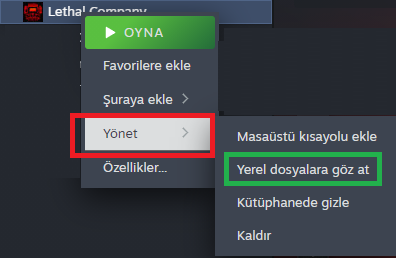

Başlamadan önce
Lütfen mevcut Modlarınızı kaldırınız. Herhangi bir çakışma olasılığı olmaması adına.
Aşağıdaki Dosya ve Klasör Kesinlikle Sildiğinizden emin olun
- BepInEx
- doorstop_config.ini
- winhttp.dll
Yükleme
1. Adım Oyun Dosyasını Bulma
- Steam açınız "kütüphane" bölümüne gidiniz.
- "Lethal Company" Sağ Tıklayınız.
- "Yönet" Basın ardından "Yerel dosyalara göz at"

2.1. Modları Yükleme
Açılan windows gezginine Aşağıdaki dosyaları/Klasörleri kopyalayınız
- BepInEx
- doorstop_config.ini
- winhttp.dll
2.2. r2modman Yükleme (İsteğe Bağlı)
Eğer r2modman ile kullanmak isterseniz
NOT: r2modman üzerinden zaten bir profil oluşturmalısınız yoksa kullanamazsınız.
3. İsteğe Bağlı Klasör/Dosya Yükleme
Açılan windows gezginine Aşağıdaki dosyaları/Klasörleri kopyalayınız
| Ad |
Açıklama |
| SaveData |
Bu Kısayol sizi Lethal Company içinde oyun savelerinize götürür. Ayrıca Modlara ait bazı konfigürasyonlarda burada olabilir |
2 ve 3 adımda olmıyan dosyaları yüklemenize gerek yoktur.